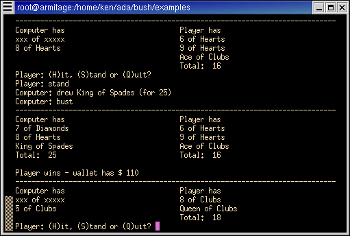

File : bjack.bush

#!/usr/local/bin/bush
--
-- Basic Blackjack
--
-- The casino game...not that I've ever been to a casino.
-- by Ken O. Burtch.
pragma restriction( no_external_commands ); -- O/S independent
procedure bjack is
wallet : integer := 100;
reply : string;
type aCard is new positive;
type aDeck is array(1..52) of aCard;
-- The Deck
next_card : natural := 0;
deck : aDeck := (
1, 2, 3, 4, 5, 6, 7, 8, 9, 10, 11, 12, 13, 14, 15, 16, 17, 18, 19, 20,
21, 22, 23, 24, 25, 26, 27, 28, 29, 30, 31, 32, 33, 34, 35, 36, 37, 38,
39, 40, 41, 42, 43, 44, 45, 46, 47, 48, 49, 50, 51, 52
);
card_name : array(1..52) of string := (
"Ace of Clubs", "2 of Clubs", "3 of Clubs", "4 of Clubs",
"5 of Clubs", "6 of Clubs", "7 of Clubs", "8 of Clubs",
"9 of Clubs", "10 of Clubs", "Jack of Clubs", "Queen of Clubs",
"King of Clubs",
"Ace of Diamonds", "2 of Diamonds", "3 of Diamonds", "4 of Diamonds",
"5 of Diamonds", "6 of Diamonds", "7 of Diamonds", "8 of Diamonds",
"9 of Diamonds", "10 of Diamonds", "Jack of Diamonds", "Queen of Diamonds",
"King of Diamonds",
"Ace of Hearts", "2 of Hearts", "3 of Hearts", "4 of Hearts",
"5 of Hearts", "6 of Hearts", "7 of Hearts", "8 of Hearts",
"9 of Hearts", "10 of Hearts", "Jack of Hearts", "Queen of Hearts",
"King of Hearts",
"Ace of Spades", "2 of Spades", "3 of Spades", "4 of Spades",
"5 of Spades", "6 of Spades", "7 of Spades", "8 of Spades",
"9 of Spades", "10 of Spades", "Jack of Spades", "Queen of Spades",
"King of Spades"
);
card_value : array(1..52) of natural := (
1, 2, 3, 4, 5, 6, 7, 8, 9, 10, 10, 10, 10,
1, 2, 3, 4, 5, 6, 7, 8, 9, 10, 10, 10, 10,
1, 2, 3, 4, 5, 6, 7, 8, 9, 10, 10, 10, 10,
1, 2, 3, 4, 5, 6, 7, 8, 9, 10, 10, 10, 10
);
-- The Player Hands
player_total : natural := 0;
player_hand : aDeck;
player_count : natural := 0;
ai_total : natural := 0;
ai_hand : aDeck;
ai_count : natural := 0;
type a_status is (done, player_turn, ai_turn );
status : a_status := player_turn;
begin
loop
wallet := wallet - 10;
-- Shuffle Deck
declare
swap_pos : aCard;
swap : aCard;
begin
for i in 1..52 loop
swap_pos := aCard( numerics.rnd( 52 ) );
swap := deck(i);
deck(i) := deck(swap_pos);
deck(swap_pos) := swap;
end loop;
next_card := 52;
end;
-- initial cards
player_hand(1) := deck( next_card );
next_card := @-1;
ai_hand(1) := deck( next_card );
next_card := @-1;
player_hand(2) := deck( next_card );
next_card := @-1;
ai_hand(2) := deck( next_card );
next_card := @-1;
player_total := card_value( player_hand(1) ) +
card_value( player_hand(2) );
player_count := 2;
ai_total := card_value( ai_hand(1) ) +
card_value( ai_hand(2) );
ai_count := 2;
-- Initial ace handling
if card_value( player_hand(1) ) = 1 then
put_line( "Player: You drew an ace." );
loop
put( "Player: Is the ace (1) one or (11) eleven? " );
reply := get_line;
exit when reply = "1" or reply = "11";
put_line( "Pardon?" );
end loop;
if reply = "11" then
player_total := @+10;
end if;
end if;
if card_value( player_hand(2) ) = 1 and player_total+10<=21 then
put_line( "Player: You drew an ace." );
loop
put( "Player: Is the ace (1) one or (11) eleven? " );
reply := get_line;
exit when reply = "1" or reply = "11";
put_line( "Pardon?" );
end loop;
if reply = "11" then
player_total := @+10;
end if;
end if;
if card_value( ai_hand(1) ) = 1 then
ai_total := @+10;
end if;
if card_value( ai_hand(2) ) = 1 and ai_total+10<=21 then
ai_total := @+10;
end if;
if ai_total = 21 then
status := done;
else
status := player_turn;
end if;
loop
-- show cards
if status /= ai_turn then
declare
width : constant natural := 40;
rows : natural := player_count;
begin
if rows < ai_count then
rows := ai_count;
end if;
put_line( 78 * '-' );
put( strings.head( "Computer has", width ) );
put_line( "Player has" );
for i in 1..rows loop
if i = 1 and status = player_turn then
put( strings.head( "xxx of xxxxx", width ) );
elsif i <= ai_count then
put( strings.head( card_name( ai_hand(i) ), width ) );
else
put( width * ' ' );
end if;
if i <= player_count then
put_line( card_name( player_hand(i) ) );
else
new_line;
end if;
end loop;
if status /= player_turn then
put( strings.head( "Total: " & strings.image( ai_total ), width ) );
else
put( width * ' ' );
end if;
put_line( "Total: " & strings.image( player_total ) );
end;
end if;
if status = player_turn then
loop
if player_total = 21 then
reply := "!";
else
put( "Player: (H)it, (S)tand or (Q)uit? " );
reply := inkey & "";
new_line;
end if;
exit when reply = "h" or reply = "q" or reply = "s" or reply = "!";
put_line( "Pardon?" );
end loop;
if reply = "h" then
player_count := @+1;
player_hand(player_count) := deck( next_card );
next_card := @-1;
player_total := @+card_value( player_hand(player_count) );
put_line( "Player: drew " & card_name( player_hand( player_count) ) );
if card_value( player_hand( player_count ) ) = 1 and
player_total+10<=21 then
loop
put( "Player: Is the ace (1) one or (11) eleven? " );
reply := get_line;
exit when reply = "1" or reply = "11";
put_line( "Pardon?" );
end loop;
if reply = "11" then
player_total := @+10;
end if;
end if;
if player_total > 21 then
put_line( "Player: bust" );
status := ai_turn;
end if;
elsif reply = "s" then
put_line( "Player: stand" );
status := ai_turn;
elsif reply = "!" then
put_line( "Player: you have 21!" );
status := ai_turn;
elsif reply = "q" then
put_line( "Player: quit" );
return;
end if;
elsif status = ai_turn then
if player_total > 21 and ai_total <= 21 then
put_line( "Computer: stand" );
status := done;
elsif ai_total < player_total then
ai_count := @+1;
ai_hand(ai_count) := deck( next_card );
next_card := @-1;
ai_total := @+card_value( ai_hand(ai_count) );
if card_value( ai_hand( ai_count ) ) = 1 and ai_total+10<=21 then
ai_total :=@+10;
end if;
put( "Computer: drew " & card_name( ai_hand( ai_count) ) );
put_line( " (for" & strings.image( ai_total ) & ")" );
else
if ai_total <= 21 then
put_line( "Computer: stand" );
else
put_line( "Computer: bust" );
end if;
status := done;
end if;
delay 0.5; -- suspense
elsif status = done then
new_line;
if ai_total > 21 then
put( "Player" );
wallet := @+20;
elsif player_total > 21 then
put( "Computer" );
elsif ai_total >= player_total then
put( "Computer" );
else
put( "Player" );
wallet := @+20;
end if;
put_line( " wins - wallet has $" & strings.image( wallet ) );
exit;
end if;
end loop;
if wallet <= 0 then
put_line( "Player: the computer has all of your money" );
exit;
end if;
end loop;
end bjack;